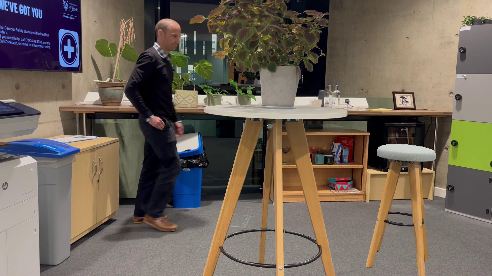
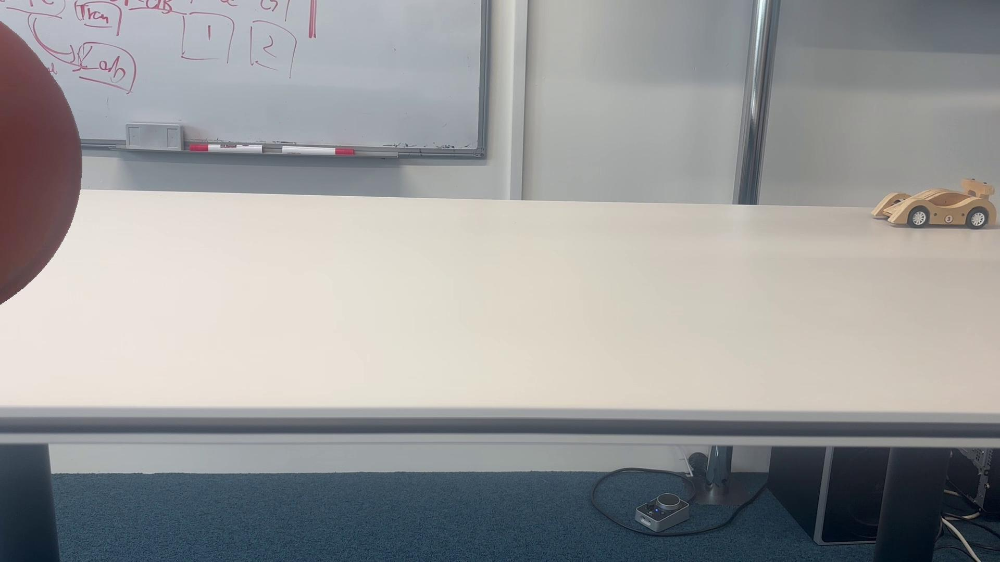
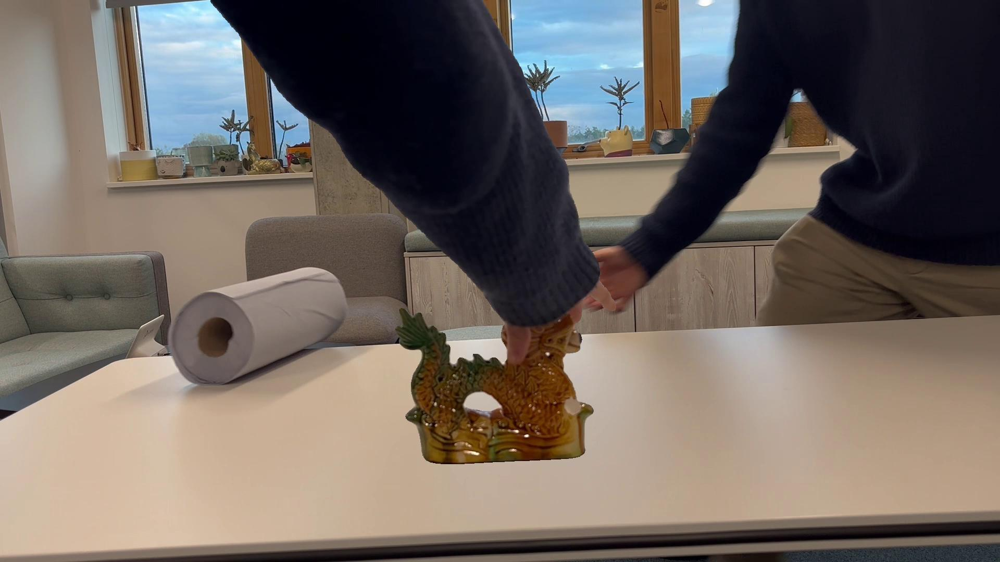
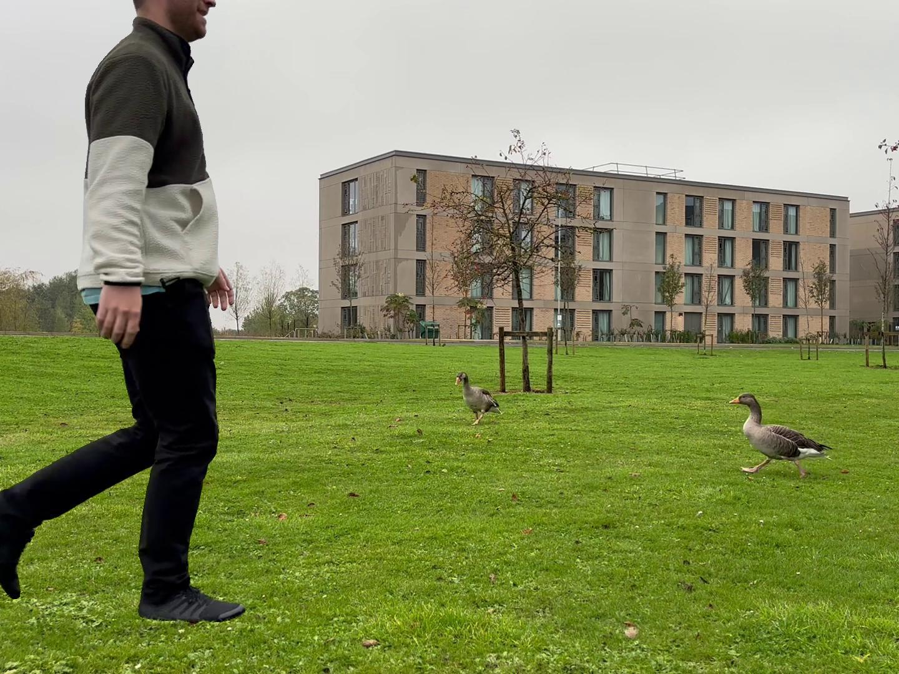
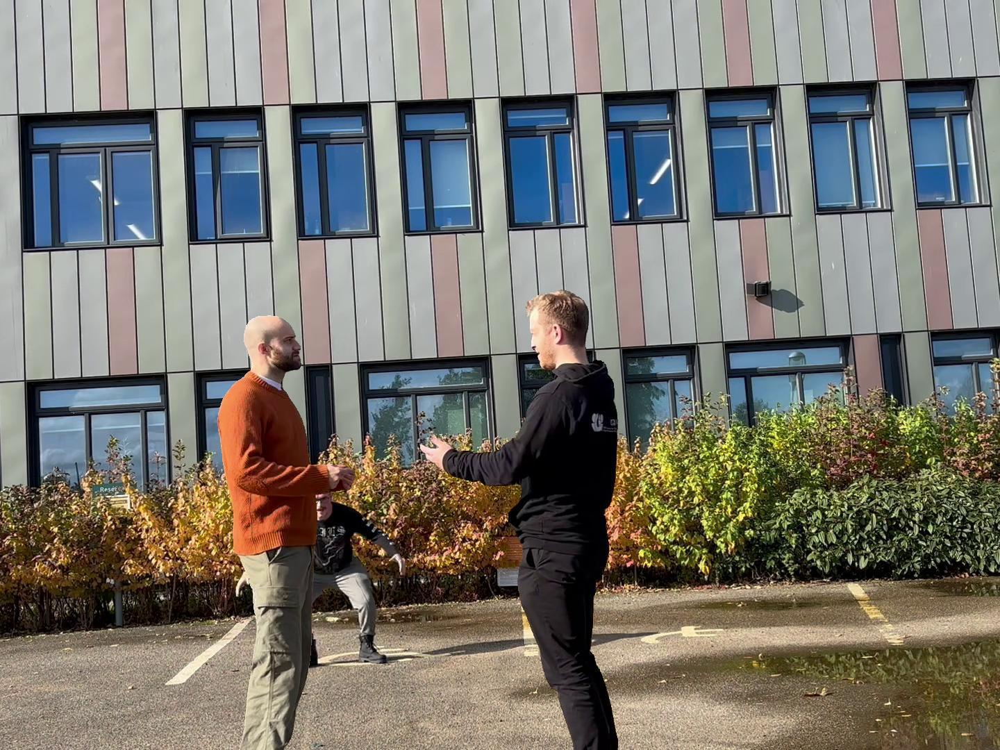
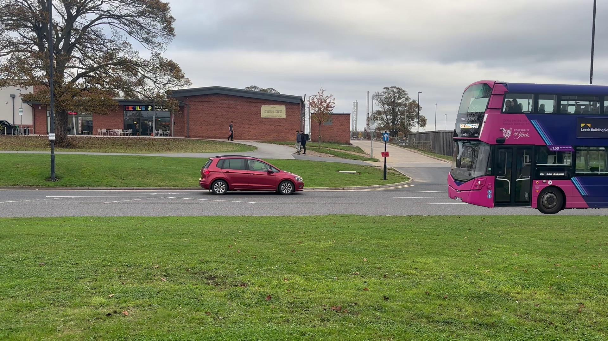
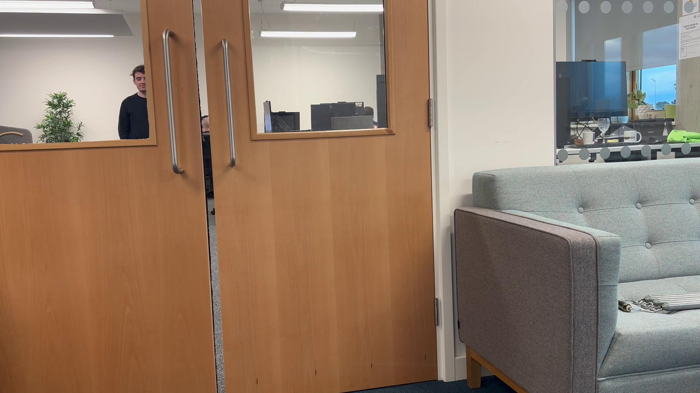
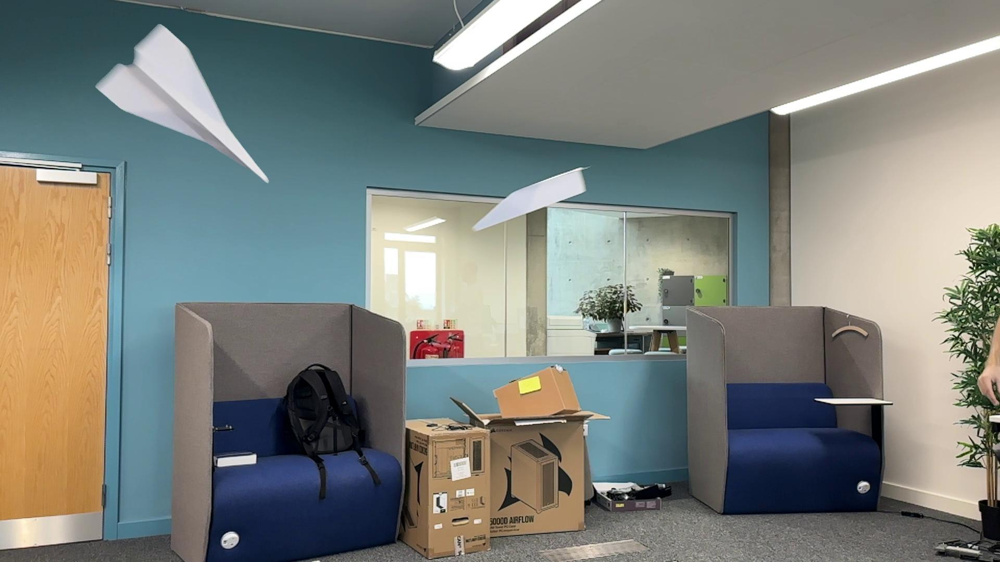

Dataset Creation
We have curated a dataset (TABE-51), a video amodal segmentation dataset that provides high-quality
ground truth labels for occluded objects. The dataset contains 51 scenes with over 2000 frames and
provides a robust benchmark for evaluating how well segmentation methods track and predict occluded
objects throughout entire video sequences. Below showcases the creation process.

We record an initial clip of an object without occlusion and then overlay a second clip featuring
the occluding object. This compositing yields realistic video sequences with natural motion and highly
accurate ground truth masks, allowing models to be evaluated on how well they handle occluded
objects in authentic scenarios.








Background
Background Seg
Foreground
Foreground Seg
Combined
Visible Mask
Ground Truth Mask
Method
We propose a novel zero-shot amodal video object segmentation method. We
call this methodology TABE (Track Anything Behind Everything). The key
idea is to apply outpainting to the visible regions of the
tracked object using a video diffusion model.
From an input video and prompts to describe the target object in frame 1 (we use point clicks
but this could also be natural language description), we use a zero-shot
segmentation model to find the query mask. We provide this query mask and the video frames to a
visible VOS method (SAM 2) to compute the visible masks for each
frame (which might be empty if the object is completely
occluded). We use these to produce the visible masked input providing images containing only the
object itself, deforming over time and with missing parts caused by occlusions. It is to these
images that we apply our video diffusion outpainting method, prompting
the model to create a video of only the object on a white background. This provides amodal
video completion output frames. Since sometimes the outpainting process reintroduces some
background elements or other artefacts, we re-run VOS (SAM 2) on these frames with the original
query mask, providing the final segmentation result

Results
(i) TABE-51:
Add desc
(ii) DAVIES-2017:
Add desc
(iii) OVIS:
Add
desc